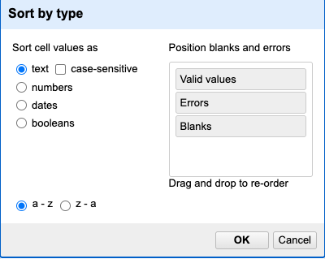
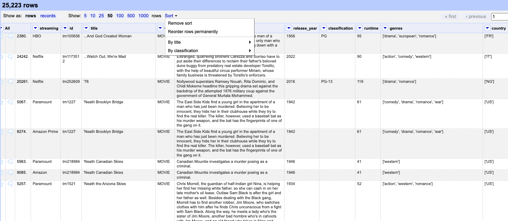
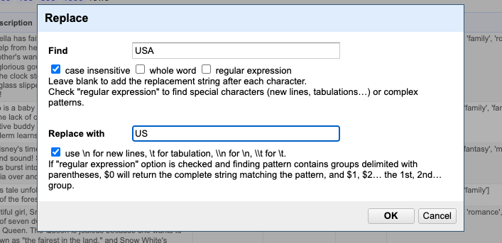

Filtering & Sorting
Filtering
At times, you might need to isolate certain parts of your data or carry out tasks on only a specific segment. This can be done by using filters to selectively display the data that meets your criteria.
Including/excluding data entries on facets
One way to filter down our data is to use the include or exclude buttons on the entries in a text facet. If you still have your text facet for title, you can use it. If you’ve closed that facet, recreate it by selecting Facet > Text facet on the title column and change from name to count.
One way to filter down our data is to use the include or exclude buttons on the entries in a text facet. If you still have your text facet for title, you can use it. If you’ve closed that facet, recreate it by selecting Facet > Text facet on the title column.
In the text facet, hover over one of the titles, e.g. Hercules. Notice that when you hover over it, there are buttons to the right for
editandinclude.Whilst hovering over Hercules, move to the right and click the
includeoption. This will include this title, changing from blue to orange, and new options ofeditandexcludewill be presented. Note that in the top of the page, “5 matching rows” is now displayed instead of the thousand rows we had previously.You can include other titles in your current filter - e.g.click on The Stranger in the same way to include it in the filter.
Alternatively, you can click the name of the species to include it in the filter instead of clicking the
include/excludebuttons. This will include the selected species and exclude all other options in a single step, which can be useful.Click
includeandexcludeon the other species and notice how the entries appear and disappear from the data table to the right.
Click on Reset at the top-right of the facet before continuing to the next step.
Text filters
One way to filter data is to create a text filter on a column. Close all facets you may have created previously and reinstate the text facet on the title column.
Click the down arrow next to
title>Text filter. A filter will appear on the left margin below the text facet.Type in
americaninto the text box in the filter and press return. At the top of the page it will report that, out of the total rows 123 where found and can be selected for the subsequent steps.
Sorting
Sorting data is a useful practice for detecting outliers in data - potential errors and blanks will sort to the top or the bottom of your data.
You can sort the data in a column by using the drop-down menu available in that column. There you can sort by text, numbers, dates or booleans (TRUE or FALSE values). You can also specify what order to put Blanks and Errors in the sorted results.
If this is your first time sorting this table, then the drop-down menu for the selected column shows Sort.... Select what you would like to sort by (such as numbers). Additional options will then appear for you to fine-tune your sorting.
If you try to re-sort a column that you have already used, the drop-down menu changes slightly, to > Sort without the ..., to remind you that you have already used this column. It will give you additional options:

After you apply a sorting method, you can make it permanent, remove it, reverse it, or apply a subsequent sorting. When it is applied, you’ll find Sort in the project grid header to the right of the rows-display setting, which will show all current sorting settings.

If you have multiple sorting methods applied, they will work in the order you applied them (represented in order in the Sort menu). For example, you can sort the “title” column alphabetically, and then sort by “release year”. If you apply those in a different order - sort “release year” the dataset first, and then alphabetically by “title” - your dataset will look different.
Sorting by multiple columns
You can sort by multiple columns by performing sort on additional columns. The sort will depend on the order in which you select columns to sort. To restart the sorting process with a particular column, check the sort by this column alone box in the Sort pop-up menu.
If you go back to one of the already sorted columns and select > Sort > Remove sort, that column is removed from your multiple sort. If it is the only column sorted, then data reverts to its original order.
Find & Replacing
Just like in other data tools, OpenRefine includes a powerful “Find and Replace” feature. For example, let’s say we’re working with the country column. Creating a text facet on this column might result in over 1,000 unique entries—far too many to scan manually for inconsistencies.
Suppose you notice that some values use “USA” instead of the expected two-character code “US”, based on the ISO 3166-1 alpha-2 standard. In that case, you can use Find and Replace to correct these entries and ensure consistency across your dataset.
Since the country may be part of a string with other countries we could use the Edit cells > Replace...

That approach would solve the issue—but only because we already knew exactly what the problem was and which 22 cells needed to be fixed. However, having the data in this column stored as a single string makes it much harder to explore and analyze effectively. That’s why splitting the data is important. Additionally, we can apply more advanced strategies to identify anomalies—such as checking whether all country codes follow the recommended two-character format—and flag any cells that need attention. We’ll dive deeper into these techniques in the upcoming episodes.